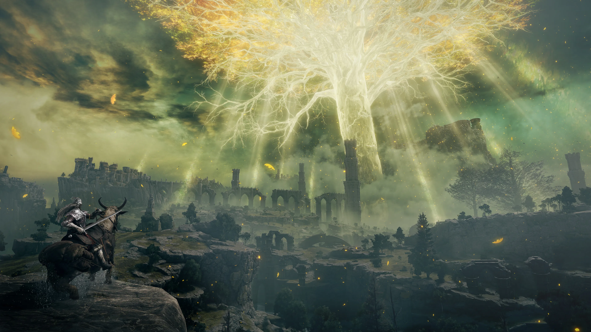
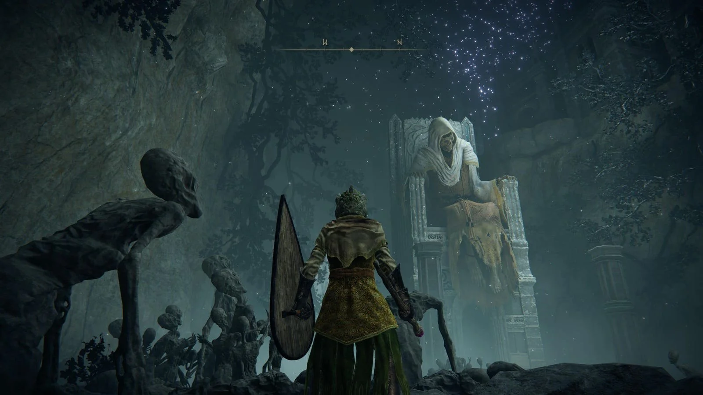
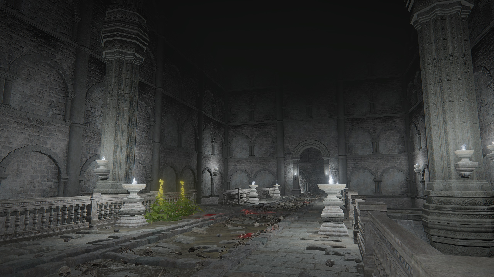
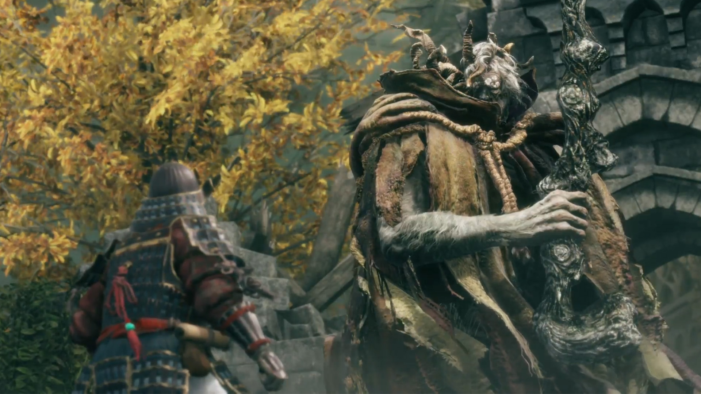

The Souls series, including games like Bloodborne and Dark Souls 3, are still known today for their deep atmosphere and world design. What made these games so iconic, Elden Ring builds on by creating a seamless open world, where every direction you explore leads to something meaningful and worth discovering..
What sets Elden Ring apart from even the best open world games is that its world never feels empty. Every cave, catacomb, side path, and side quest feels like it has a purpose, and you are always rewarded for exploring off the main path.
What makes the Lands Between so special:
Whether you are underground at Siofra River or pushing through hell that is Caelid, every region feels hand-crafted. The variety in the game allows for everyone who is playing Elden Ring, to have their own unique experience.




Elden Ring is known for its difficulty, and that reputation is well deserved. However, the game never feels unfair. It teaches patience, and with each failed attempt, you learn more about a boss’s patterns, find the right opening, and eventually land the final blow, making every victory feel earned and satisfying.
The boss design in particular is a masterclass. Each major boss is visually spectacular, mechanically unique, and genuinely challenging without feeling cheap. Battles against Malenia have become legendary, standing as one of the most iconic and respected challenges in gaming history.
What makes these boss fights feel unique is the huge variety of build options. Players can choose strength, magic, faith, bleed, and more, leading to completely different playstyles. Two people can finish the same game in totally different ways, and both feel just as rewarding. That level of depth is rare, and it’s a big reason Elden Ring stands as one of the greatest games ever made.